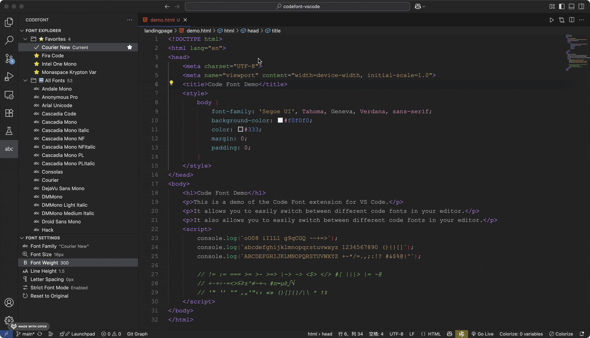

Your code font, one click away in VS Code
CodeFont scans your installed fonts, verifies they work for code, and applies the one you choose to the editor or terminal. No JSON editing, no telemetry.
Built for Real Code Font Workflows
CodeFont verifies what is installed, keeps your favorites close, and writes the right setting for your editor or terminal.
Verified Monospace Detection
Checks printable ASCII coverage and character widths before a font is listed. Icon, symbol, and proportional fonts are filtered out.
Font Explorer
Favorites, Installed Fonts, and Recommended Fonts live in one tree. The active font is marked with a check.
Editor Font Settings
Set family, size, weight, line height, and letter spacing in one view, plus fallback mode. No settings.json editing.
Terminal Font Settings
Configure the integrated terminal independently, or choose Inherit from editor font. Values are written to terminal.integrated.*.
Status Bar and Commands
The status bar shows the current font and size; click it to open the picker. Rescan fonts, reset settings, and change size from the Command Palette.
Fast, Local Rescans
Reads every face in .ttc/.otc files, follows symlinked font folders, reuses a 24-hour cache, and rescans only changed folders. Runs locally with no telemetry.
Your Font Workflow, Inside VS Code
Everything lives in the CodeFont panel in your Activity Bar. Pick a font, tune it, and get back to code.

Up and Running in Three Steps
No config files, no guesswork. Install CodeFont and let it handle the font settings.
Install CodeFont
Install from the VS Code Marketplace. Requires VS Code 1.100 or newer and runs on Windows, macOS, and Linux.
Open the CodeFont Panel
Click the CodeFont icon in the Activity Bar. Font Explorer shows Favorites, Installed Fonts, and Recommended Fonts.
Apply and Tune
Click a font to apply it. Adjust size, weight, line height, and spacing in Editor Font Settings or Terminal Font Settings.
What CodeFont 0.1.0 Actually Does
No ratings, no testimonials. Just the behavior you can verify in the extension.
Verified before listed
A font must cover at least 76 of 95 printable ASCII characters, with letters and digits sharing one advance-width cluster. Metadata is only a fallback.
Editor and terminal stay independent
Changes are written to global editor.* and terminal.integrated.* settings. The terminal can inherit the editor font, and each has its own reset.
Built for real font folders
Reads all faces in .ttc/.otc collections, follows symlinked directories, caches for 24 hours, and rescans only changed folders.
One panel for editor and terminal fonts.
CodeFont 0.1.0 is free, MIT-licensed, and runs entirely on your machine. No account, no telemetry.